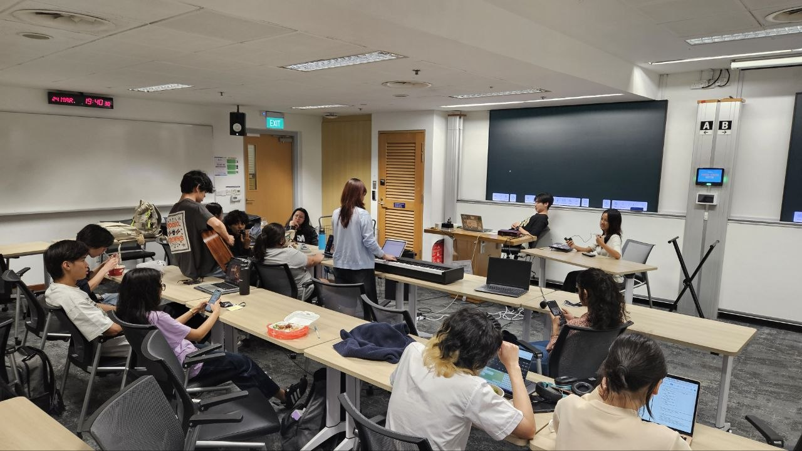
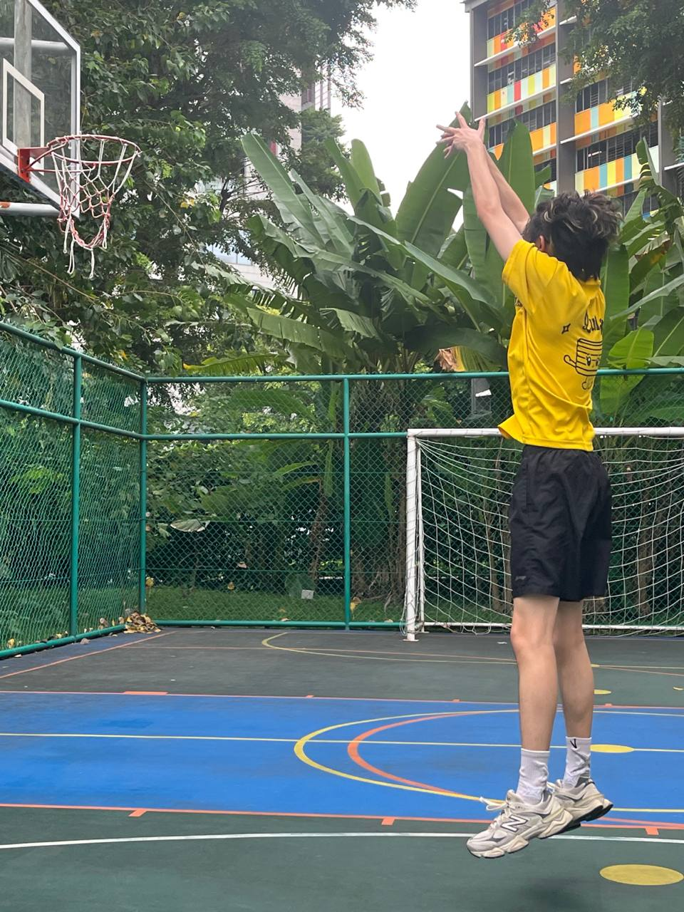
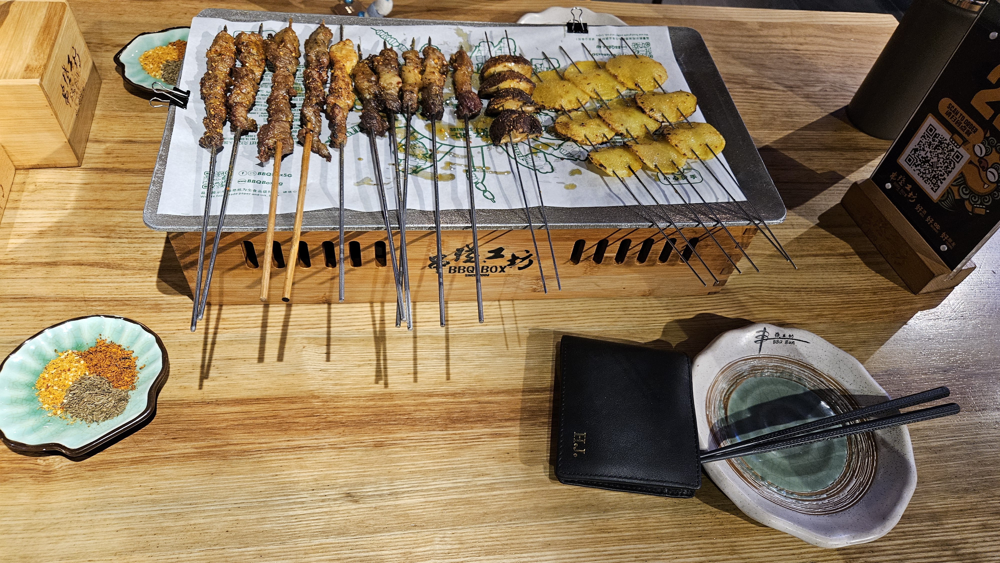
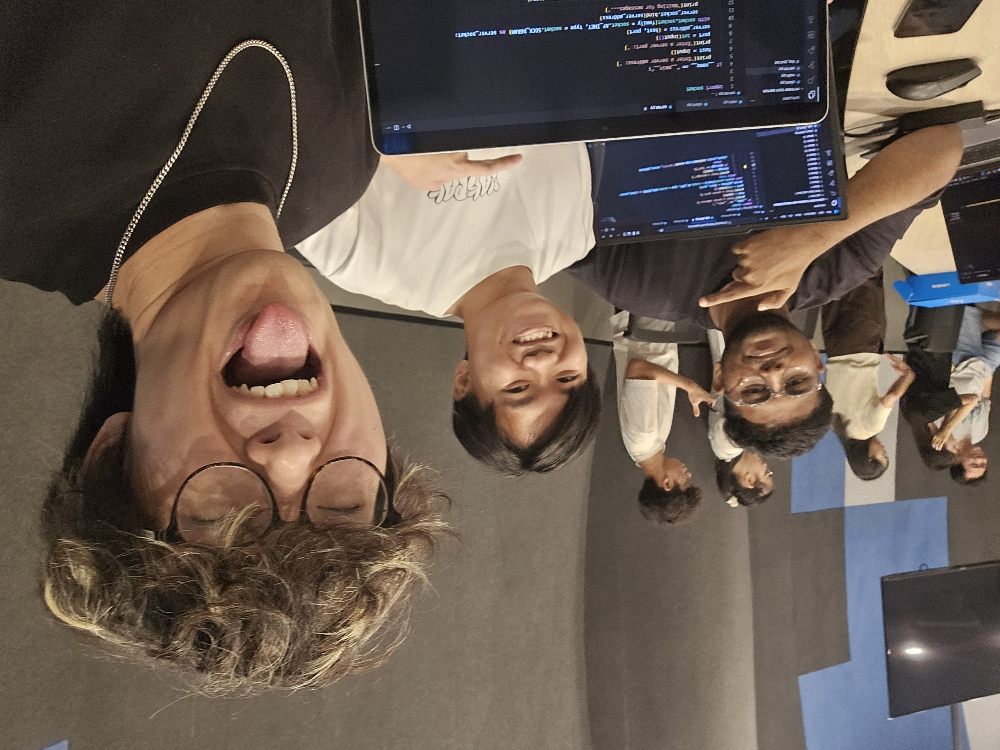
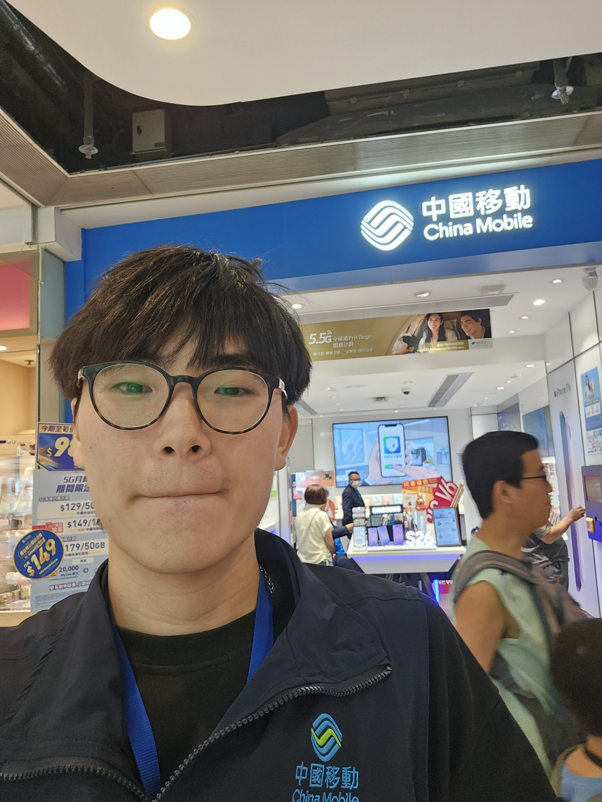
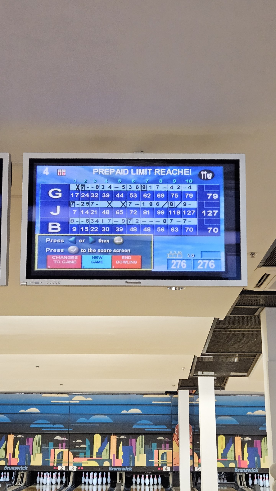
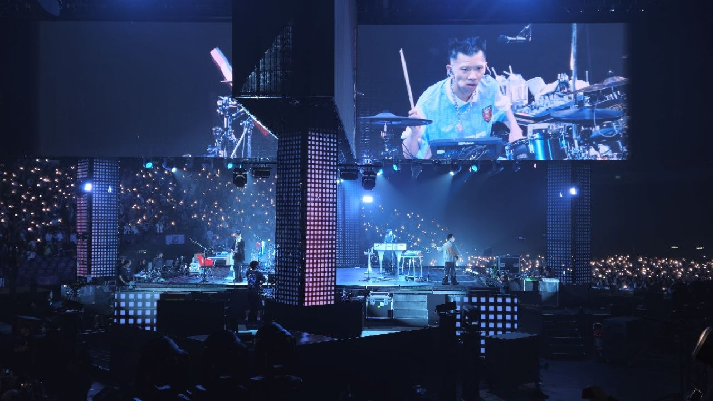
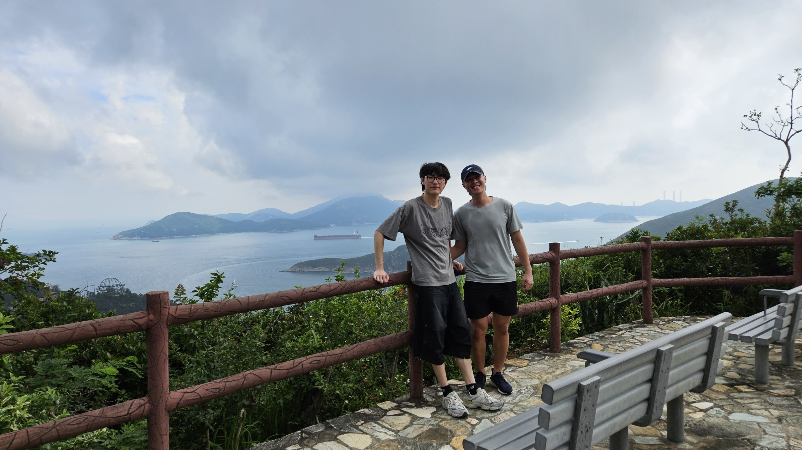

Hey there gorgeous visitor, this is Hin Ji. I am currently 22 years old, studying computing in Singapore
Management University. I feel like putting just vocabularies is more concise than the normal way of explaining
so...
Music (playing, listening, making), Sports (a lot), Computing, Exploring, Travelling, Eating ... just take a look.
Thank You all for coming~Performing in School for Valentines Day

Managing and hosting choir sessions for Community Service

Basketball with my friends! (Sick capture)

I can have 烤串 for 6 weeks straight

Computing
Blog:
📆 2026.07.01
📍 Wong Tai Sin, Hong Kong
Invited to be part of the biggest company in the world.

(temporarily)
📆 2026.06.25
📍 Belair Bowling Center, Shatin, Hong Kong
Bowling with my secondary school friends. UK representative "G" had good strength, Canada representative "B" was
precise (into the channels), Singapore representative "J", of course, had both strength and precision.

Might be my career high considering that I don't play much bowling.
📆 2026.05.29
📍 AsiaWorld Expo, Hong Kong
It's my 2nd time watching them. They still remain to be my biggest motivation and inspiration for music and
performance. (I think the Singapore ones was slightly better, mainly because of the audio problem with four-sided
stage, and the arrangements for the SG one 2 years ago is slightly better).

音楽もステージ演出も最高だと思う
📆 2026.05.22
📍 Nam Long Shan, Hong Kong
Hiked with Lucas today. 3 types of sound. 1st type was when we chat, 2nd was the insects flying, 3rd and my
favourite was the people in Ocean Park screaming in their roller coasters. Amazing view and we summitted first
try.

Just nice there was an old uncle cleaning the table. His photo-taking skills might be better than me.
📆 2026.05.13
📍 Shibuya, Tokyo
Few years ago I started liking cyberpunk-styled cities. I was so obsessed with the LED signs and layouts of Tokyo
streets like Shibuya Crossing. However there were no opportunities to visit. Now that I've visited there, I feel
that my dream is achieved. It looks as fancy as I expected (weird liking I know). Another feeling I have is that,
life is too short to wait for 'perfect chances'. If possible, just do it. Don't think too much.